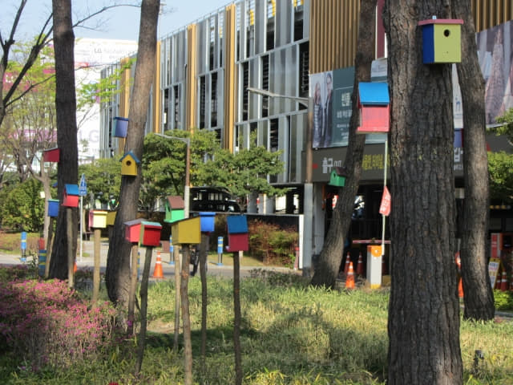

4.13.2017 (星期三)
快樂時間總是在不知不覺間溜走, 教人留戀, 又來到這韓國春天濟州及本島南部二十二天之旅最後的一天了, 又是準備踏上歸途的時候, 回想起旅程出發的那一天, 記憶仍然那麼清晰, 那麼真實, 好像是剛剛發生的, 很難相信及接受, 就這樣在韓國匆匆渡過了二十二天!
因為是搭乘下午二時五十分的飛機返回香港, 所以還有半天的時間遊覽, 來到旅程的尾聲, 只想悠閒的渡過, 所以只安排了在釜山沙上區附近巡巡。離酒店不遠的地方有一個公園, 正好利用這半天時間慢慢的遊覽, 那裡便是沙上近鄰公園 (사상근린공원)。
從地圖上來看, 沙上近鄰公園離我們下榻的沙上區路易斯酒店頗遠的, 估計慢慢走約一小時應可到達。
早上六時三十分起床, 梳洗完畢, 乘電梯往酒店一樓吃早餐。甫步出電梯, 已經聽到嘈雜的聲音, 原來餐廳內有三位中年女性旅客, 正在用手機聽電台的廣播, 聲浪極大, 如果是播放音樂, 倒可勉強接受, 但卻是令人極為不舒服的治療危疾節目。
很難接受這些在公共場所沒有公德心的行為, 而且還強迫他人在吃早餐時聽治療危疾節目, 真是有點反胃, 匆匆吃完早餐便算了, 吃了什麼也沒印象, 好像也是整個旅程唯一沒有拍照的早餐。
返回房間, 收拾一些隨身攜帶的用品及地圖, 於早上八時開始這韓國旅程最後的一個行程 — 釜山沙上近鄰公園。因沙上區路易斯酒店的 Check Out 時間是中午十二時, 估計我們約早上十一時半便可以回來, 所以不必寄放行李在服務處。
廣場路 (광장로) 市區中的公園
走出酒店, 穿過釜山沙上客運站, 轉左沿廣場路 (광장로)走。廣場路本身就是一個公園, 這是綠化和美化市區的一倨好典範。
路中的鬱金香很漂亮。記得約四十年前在荷蘭見到田野和公園中的鬱金香, 驚為天人, 現在隨處都可以見到了! 又是世界大同的一個好例子。
沿廣場路慢慢走, 接著的一段路有很多七彩繽紛的鳥屋。歐洲的樹林間、花園和街道都有很多這類的鳥屋, 部份還擺放了食物, 是人類和鳥兒和平共處的好例子。


這個是「福雞」?
早上繁忙時間, 巴士站前等候乘車的長長的龍。
頭頂是高架的輕軌鐵道。來到地鐵沙上站的3號出入口, 看看地圖, 在這裡轉右沿另一條街道走。
這路口非常複雜, 好像八爪魚的。沿斑馬線走過三條馬路, 才去到斜對面的街口。
回頭望望, 馬路對面竟然有兩個用貨櫃做的藝術品。
歷史路 (사상로)
來到斜對面的街口, 看見路口的地鐵沙上站2號出入口, 知道沒有走錯路, 在這裡朝東南方向的街道(歷史路)走。
街道兩旁都是綠油油的楓樹, 到了秋天, 別有一番景色呢!
歷史路 146 段街 (사상로146번길)
沿歷史路走了一會, 來到一個三叉路口, 在這裡轉左沿十點方向的小路走, 這小路是歷史路146段街。看見前面兩個老人家的行裝好像是晨運的, 靈機一動, 老人家的晨運一般都是去公園的。莫非他們現在就是去沙上近鄰公園? 快些跟著他們走!

{kind=link}